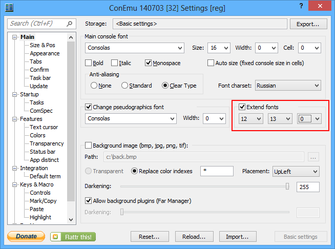
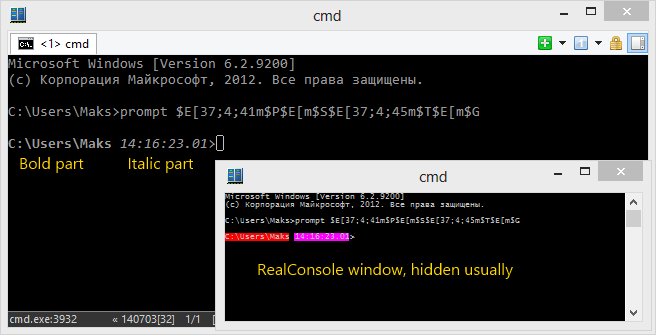
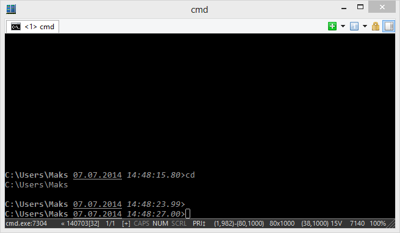

ConEmu provides full-featured support of Windows console functions. That means you may run here any console applications designed for WinApi. On the other hand, Windows console does not provide official way to print bold/italic/underlined text.
However, when you are using ConEmu you may use them. Here are some tricks.
You may choose two background color indexes to force ConEmu to draw text using bold/italic outline.
When you turn the feature On on the ‘Main’ page, by default, ‘Light red’ background will be replaced with bold outlined text, and ‘Magenta’ background will be replaced with italic outlined text.
Example for ‘cmd.exe’ prompt: bold ‘path’ followed by italic ‘time’ and normal ‘>’.
prompt $E[37;4;41m$P$E[m$S$E[37;4;45m$T$E[m$G
The drawback. You lose two background indexes and you must choose the background color they would replaced with. In the following examples, black color (#0) was selected for using with cmd.exe prompt.
Extend fonts settings

Bold and italic in cmd prompt

Another way is using xterm-256 ANSI sequences. For now, ConEmu provides limited support for that feature, extended codes are processed in the bottom of the scroll buffer only. When you lines goes up - extended attributes will be lost. How to put your prompt at the bottom described here: PromptAtTheBottom.
Anyway, if you choose SGR 38 or 48 you may use bold/italic/underlined after them.
prompt $E[9999E$E[48;5;0m$E[38;5;7m$E[1m$P$E[m$S$E[48;5;0m$E[38;5;7m$E[4m$D$E[m$S$E[48;5;0m$E[38;5;7m$E[3m$T$E[m$g
Bold/italic/underlined in cmd prompt
